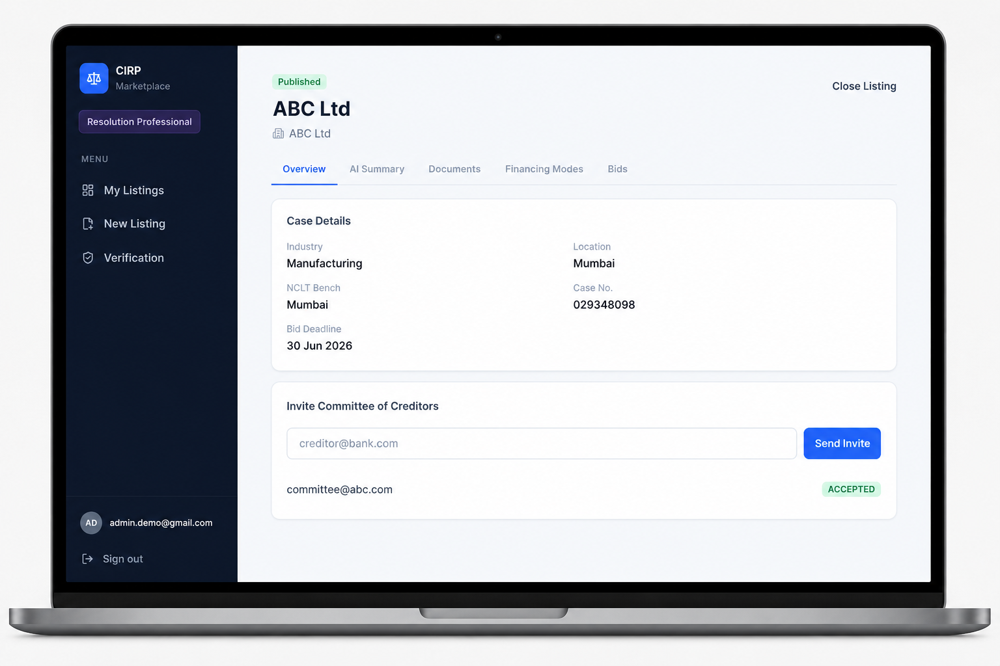

A connected-health companion that turns wearable data into useful daily insight.
Independent product engineer
I’m Nikhilesh Wani — a web and mobile app developer with 8+ years of experience bringing ambitious product ideas to life, from first flow to dependable software.
Explore my work ↓.jpeg) NIKHILESH
NIKHILESHFrom discovery through delivery.
One consistent product experience.
Solid foundations for growth.
A practical partner for teams that need high-quality product thinking and hands-on execution in the same room.
01 / Selected work
Digital products designed around the work people actually need to do — at a desk, on the move, or in the moments between.
A connected-health companion that turns wearable data into useful daily insight.

A modular workspace for the operational core of a growing business.

A unified service workspace for conversations, tickets, and better follow-through.

A focused assessment platform for administering and improving learning.

A structured listing and resolution workspace built for complex professional workflows.
02 / The toolkit
I work at the intersection of technical depth and product judgment. The stack should serve the problem — whether that means a fast proof of concept or a platform engineered for the long run.
03 / Start a conversation
Let’s build something clear, useful, and built to last.
See how I can help →